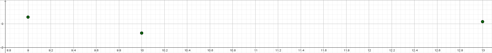

Undervejs i introduktionsafsnittet har vi antaget at
tingene forholder sig som forventet. Vi har funktionsforskriften for en lineær
funktion og den ene konstant bestemmer hvor meget funktionsværdien stiger når
x-værdien stiger med 1 og at den anden konstant beskriver begyndelsesværdien.
Vi har også fået computeren til at bestemme linjen igennem to punkter. Nu vil
jeg fremlægge et par sætninger der beviser hvordan tingene forholder sig, så
vi kan være sikre på det og at det også forholder sig sådan ved andre lineære
funktioner.
Vækstegenskaber
For en lineær funktion \(f(x)=ax+b\) gælder der at \(a\) bestemmer hvor meget
funktionsværdien stiger med hvis x-værdien stiger med 1, dvs. at
$$f(x+1)=f(x)+a$$
Hvis x-værdien stiger med et andet tal, h, så skal hældningskoefficienten
ganges med det tal, dvs.
$$f(x+h)=f(x)+ah$$
Den anden konstant \(b\) bestemmer hvor grafen skærer y-aksen.
Bevis
Lad os starte med at sætte \(x+h\) ind i funktionsforskriften
\begin{align}
f(x+h)=&a(x+h)+b\\
=&ax+ah+b\\
=&ax+b+ah\\
=&f(x)+ah
\end{align}
Dernæst ganger vi \(a\) ind i parentesen. Så rykker vi rundt på \(a\) og
\(b\) og slår de første par led sammen til funktionsforskriften. Jeg sprang
den første formel over, men beviset er identisk med \(h=1\). For at vise
at \(b\) er skæringen med y-aksen, observerer jeg at y-aksen har x-værdien
\(x=0\) og derfor gælder der at
$$f(0)=\cancel{a⋅0}+b=b$$
∎
Det lille kvadrat betyder at nu er beviset færdigt. Disse vækstegenskaber
kan også formuleres som
$$\Delta y=a\Delta x$$
hvor trekanten er det græske tegn store "delta" og betyder forskel, ændring
eller vækst. Altså findes væksten i y-værdien ved at gange væksten i
x-værdien med hældningskoefficienten. Dette fører os til den teoretiske
bestemmelse af linjen der går igennem to punkter.
To-punktssætningen
For to punkter \(P=(x_1,y_1)\) og \(Q=(x_2,y_2)\) kan man finde den linje
det krydser de to punkter ved først at bestemme hældningskoefficienten med
følgende formel
$$a=\frac{\Delta y}{\Delta x}=\frac{y_1-y_2}{x_1-x_2}=\frac{y_2-y_1}{x_2-x_1}$$
Dernæst kan man bestemme begyndelsesværdien ved at sætte et af punkterne
ind i
$$b=y-ax$$
Bevis
Den første del af formlen følger oplagt fra den forrige formel, altså
$$\frac{\Delta y}{\Delta x}=\frac{a\cancel{\Delta x}}{\cancel{\Delta x}}
\implies a=\frac{\Delta y}{\Delta x}$$
men lad os lave et forskelligt argument for at træne bevisførelse. Det
at de to punkter ligger på linjen betyder at
\begin{align}
&&y_1=&ax_1+b\\
&&y_2=&ax_2+b\\
\implies&&y_1-y_2=&ax_1+b-(ax_2+b)\\
&&=&ax_1+\cancel{b}-ax_2-\cancel{b}\\
&&=&a(x_1-x_2)\\
\iff&&\frac{y_1-y_2}{x_1-x_2}=&\frac{a\cancel{(x_1-x_2)}}{\cancel{x_1-x_2}}
\end{align}
Vi kunne lige så godt have trukket det første punkt fra det andet hvilket
havde bare byttet rundt på 1-tallene og 2-tallene. Formlen for \(b\) er
en oplagt omskrivning af funktionsforskriften
$$y=ax+b\iff y-ax=\cancel{ax-ax}+b=b$$
∎
Der er en lineær funktion der har særlig status, kaldt proportionalitet.
Proportionalitet
Proportionalitet er en lineær funktion med begyndelsesværdien \(b=0\), dvs.
funktionsforskriften
$$f(x)=kx$$
hvor \(k\) kaldes proportionalitetskonstanten, og
$$k=\frac{y}{x}$$
Dvs. at forholdet mellem de to størrelser, x og y, er konstant og man skriver
\(y∝x\).
Proportionalitetens særlige status skyldes blandt andet at der er rigtig
mange sammenhænge i fysik der er proportionale, et objekt der ikke har nogen
hastighed har heller ingen kinetisk energi, samme med højde og gravitationel
potentiel energi. Hvis man ikke har det ene har man tit heller ikke det andet.
Regression
For at bestemme hvor "god" en regression er har man et par begreber og metoder.
Residualplot
Det første er residualplottet hvor vi laver punkter der består af deres
x-værdier og det tilhørende residual, dvs. \((x_i,r_i)\) for \(i=1,2,3,\ldots\).
For de tre rejser fra tidligere bliver det \((9,0.54)\), \((10,-0.81)\)
og \((13,0.14)\). Det vi så kan gøre er lave et plot ud fra disse residualer

Når vi laver målinger i virkeligheden bliver der altid små afvigelser fra
modellen, og det vi bruger residualplottet til er at se om afvigelserne
er tilfældige eller ej. Fordi hvis afvigelserne er tilfældige tyder det
bare på at det er manglende præcision i vores målinger, evt. sjusk, men
hvis der er systematiske afvigelser i residualplottet tyder det på at det
er matematikken der er på afveje, evt. at vi har valgt den forkerte model.
\(r^2\)
\(r^2\)-værdien giver et mål for punkternes afstand til modellen. Først
beregner man gennemsnittet af y-værdierne fra datasættet
$$\bar{y}=\frac{1}{n}\sum_{i=1}^n y_i$$
Det mærkelige tegn er det græske tegn store "sigma" hvilket svarer til "S"
og står for "sum". Derfor læses regnestykket som at vi lægger alle y-værdierne
sammen, fra det første \(i=1\) op til det sidste \(i=n\), og dividerer med
antal punkter, \(n\). Dernæst beregner vi residualerne til gennemsnitslinjen,
kvadrerer dem, lægger det hele sammen og får
$$A_g=\sum_{i=1}^n (y_i-\bar{y})^2$$
hvilket bliver et mål for hvor langt fra gennemsnittet de forskellige punkter
ligger. Nu gør vi præcis det samme for vores regressionslinje og får
$$A_r=\sum_{i=1}^n (y_i-f(x_i))^2$$
Nu sammenligner vi de to tal ved trække deres forhold fra 1, dvs.
$$r^2=1-\frac{A_r}{A_g}$$
Dette tal er derfor et mål for hvor godt punkterne ligger i forhold vores
sammenhæng(regression) i modsætning til ingen sammenhæng(gennemsnittet)
og jo bedre sammenhængen er, jo tættere er forholdet på 0 og \(r^2\)-værdien
på 1.
Hvis du vil undersøge en mere geometrisk tolkning af linjer kan du læse
videre her.